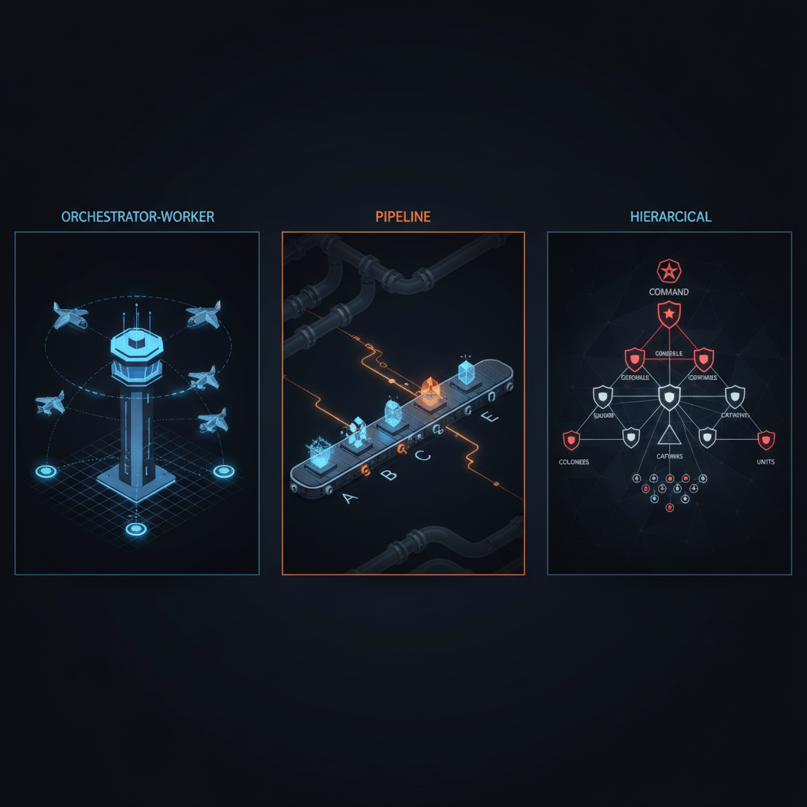
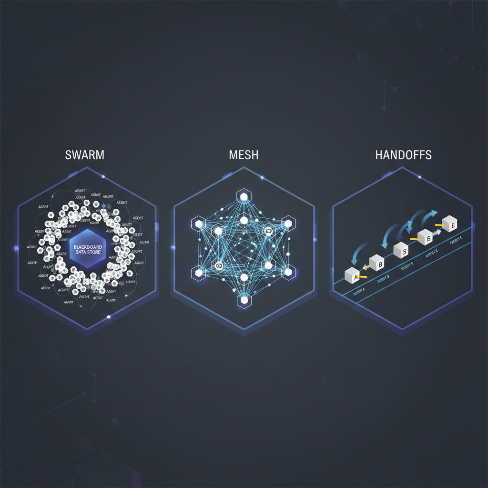
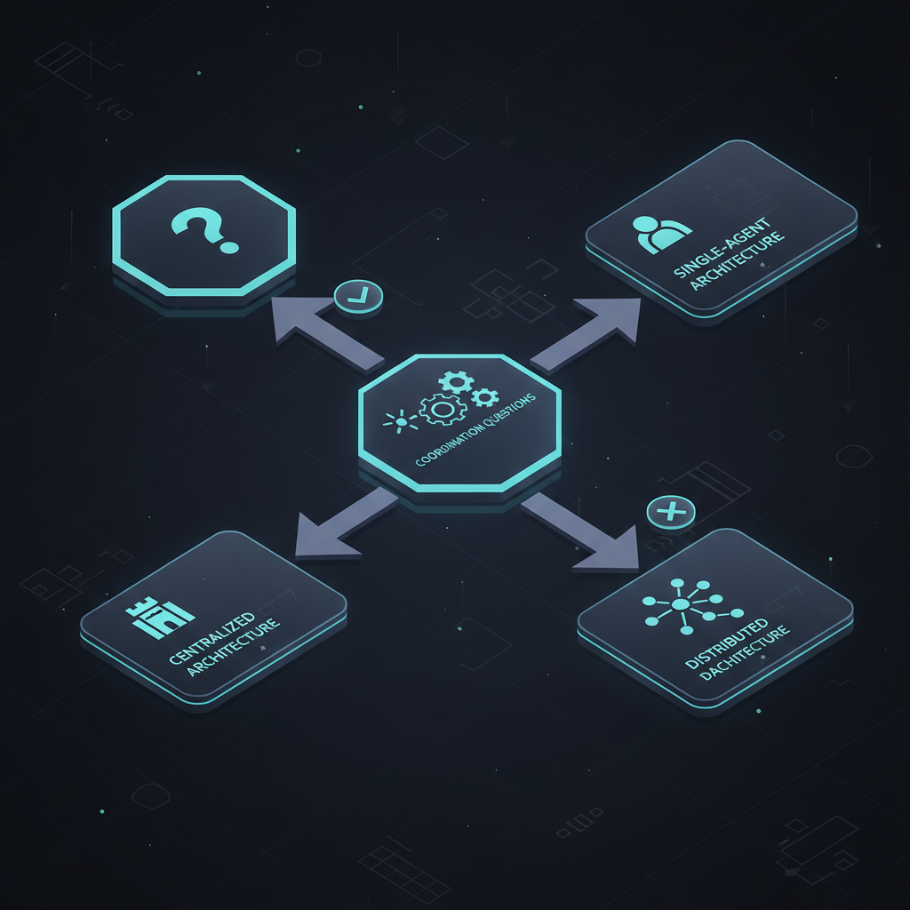

Um único agent tem uma context window, um conjunto de tools, um loop rodando. Quando a tarefa cresce além de qualquer uma dessas três, você precisa de mais que um agent. Isso é um multi-agent system: em vez de um agent fazendo tudo, divide o trabalho entre muitos, cada um com seu papel, tools e contexto.
A maioria dos multi-agent systems falha não porque o modelo é fraco, mas porque você escolheu muitos agents antes de precisar, ou escolheu a arquitetura errada uma vez que tem muitos.
Este post — adaptação enriquecida em PT-BR do "Multi-Agent Architectures, Clearly Explained" do Neo Kim — cobre as 6 arquiteturas, quando usar cada uma, e o que sempre quebra em produção.
Quando NÃO usar multi-agent
Um único agent com bons prompts e as ferramentas certas resolve mais do que se espera. Devin da Cognition processou 5 milhões de linhas de COBOL em 500 GB de repositórios com agent único, subindo merge rate de PR de 34% pra 67%.
Você só precisa de multi-agent quando bate em 3 limites duros:
1. Context overflow
Context window só comporta um tanto. Passou desse limite, info mais antiga cai, agent perde o próprio plano. Quando compaction sozinha não dá conta, um segundo agent com seu próprio context window resolve.
2. Parallelism
Tarefas independentes não deveriam esperar em fila. 4 research queries que não dependem entre si — rodar uma de cada vez é desperdício. Rodar em 4 agents separados leva tempo de aproximadamente o mais lento.
O sistema de research da Anthropic usa exatamente isso e reduziu tempo total de query em até 90%.
3. Specialization
Partes diferentes de uma tarefa frequentemente precisam de modelos, tools ou níveis de acesso diferentes:
- Agent de código precisa de sandbox.
- Agent de research precisa de web search.
- Agent customer-facing precisa de user data mas não deve ter acesso a databases de produção.
Quando um agent não consegue carregar todas as tools e permissões que a tarefa exige, cada role ganha seu próprio agent.
Se nenhuma dessas 3 condições aplica, fique com agent único. Melhores prompts + melhores tools resolvem maioria sem o overhead de coordenar agents.
As 6 arquiteturas — de centralizada a totalmente distribuída
Arquiteturas centralizadas (com chain of command claro)

1. Orchestrator-Worker
Um agent central quebra tarefa em pedaços, atribui cada pedaço a worker agents, junta resultados. Workers não falam entre si — toda comunicação passa pelo central. Como torre de controle aéreo: fala com cada avião, nenhum avião fala diretamente com outro.
Caso real: Claude Research da Anthropic. Agent central rodando Opus 4 quebra a query em partes e cria 2-10 workers Sonnet 4 (às vezes mais), todos ao mesmo tempo. Workers buscam na web, leem documentos, coletam evidências em paralelo. Quando terminam, central lê resultados e escreve um relatório único. Bateu single-agent Opus 4 em 90,2% na eval interna de research.
Trade-offs: central é coordenador E gargalo. Fala com workers um por vez. Se cada call leva 3s e 20 workers esperam, teto é ~7 tasks/segundo. Workers podem duplicar trabalho sem instruções específicas — vague task splitting transforma paralelismo em trabalho duplicado.
2. Pipeline
Agents rodam em ordem fixa, um após outro. Output de cada agent vira input do próximo, sequência inteira é definida com antecedência. Diferente de Orchestrator-Worker (central decide conforme avança), pipeline elimina essa escolha.
Como linha de montagem: cada estação faz um trabalho, passa adiante, nunca vê o produto finalizado.
Caso real: Stripe usa pra checar se novos negócios na plataforma são legítimos. Antes de agents, reviewer humano pulava entre customer databases, fontes jurídicas e support tickets. Time de engenharia quebrou em fluxo fixo de stages de agent via DAG (directed acyclic graph). Cada stage tem "rails" — contrato de output format que próxima stage espera. Cortou tempo médio de handling em 26%, reviewers avaliam outputs como 96% úteis, com registro completo de cada decisão.
Trade-offs: latência soma. Pipeline de 5 stages, 2s cada = 10s antes de qualquer output. Upside: previsibilidade. Cada stage com contrato estreito = qualquer falha rastreável a exatamente um step. Por isso workflows regulados (Stripe) usam pipelines.
3. Hierarchical
Manager top-level dá trabalho a uma ou mais camadas de manager agents abaixo, que então dão trabalho a workers individuais. Dois níveis mínimo, sistemas grandes empilham mais. Resultado é uma árvore. Nenhum agent precisa do contexto completo — top mantém goal de alto nível + summary de cada branch; níveis inferiores veem só o que sua role estreita precisa.
Como chain of command militar: ordens descem, reports sobem, ninguém pula nível.
Caso real: IBM watsonx Orchestrate. Supervisor top-level age como router/planner em 80+ domain agents pré-construídos (HR, sales, procurement). "Pedir laptops novos pro time de design" → Procure Equipment supervisor → 3 child agents especializados (cotações de vendor aprovado, checa respostas, submete purchase request).
Trade-offs: detalhes podem se perder em cada nível. Worker produz resultado detalhado. Mid-level manager encurta pra uma frase. Quando chega no top, o detalhe que importa pode ter sumido. Hierárquico troca detalhe por cobertura: mais alto, escopo mais amplo, menos conhecimento específico.
Arquiteturas descentralizadas (sem chain of command)

As próximas 3 arquiteturas abandonam o chain. São mais difíceis de debugar, mas sobrevivem melhor a falhas parciais.
4. Swarm
Muitos agents trabalham como iguais. Coordenam através de um shared blackboard — data store (Redis cache, database table, vector store) que todo agent lê e escreve. Sem mensagens diretas entre agents.
Cada agent fica observando o blackboard, vê algo que pode trabalhar, age, escreve resultado de volta. Outros agents reagem ao novo estado.
Caso real: OpenAI Swarm framework (apesar do nome, mais voltado pra handoffs); Motia com event-bus pattern; sistemas de research multi-agent que usam Redis como scratch pad compartilhado.
Trabalha bem pra problemas exploratórios sem caminho conhecido: brainstorming, pesquisa aberta, hypothesis generation.
Trade-offs: emergent behavior é poderoso mas imprevisível. Hard pra debugar. Race conditions no shared state. Sem garantia de convergência — agents podem ficar girando sem produzir resultado final.
5. Mesh (peer-to-peer)
Agents se comunicam diretamente entre si via mensagens. Sem blackboard central, sem orchestrator. Cada agent conhece os outros (ou descobre via discovery) e troca mensagens 1-on-1 ou broadcast.
Permite especialização extrema: cada agent vira "expert" num domínio, e a mesh natural emerge das interações.
Caso real: Microsoft AutoGen com GroupChat pattern; sistemas de negotiation onde agents representam stakeholders diferentes; simulações multi-agent (mercado financeiro, social networks).
Trade-offs: complexidade quadrática (N×N comunicações possíveis). Sem coordenador, easy pra dois agents loop infinitamente trocando mensagens. Hard de auditar — não há single source of truth do que aconteceu.
6. Handoffs
Pattern intermediário entre pipeline (ordem fixa) e mesh (livre). Agents passam o controle (handoff) explicitamente quando reconhecem que outro agent é mais apto. Como corrida de revezamento — bastão passa entre runners.
Diferente de pipeline: handoffs são dinâmicos — agent decide quando e pra quem passar. Diferente de mesh: só um agent ativo por vez (não há concorrência).
Caso real: OpenAI Swarm é literalmente baseado nisso — agent "triage" recebe query, passa pra agent "billing" se for sobre pagamento, pro "tech support" se for técnico. Pattern perfeito pra customer support multi-departamento.
Trade-offs: agent precisa saber pra quem passar (knowledge problem). Loop de handoffs ("billing diz que é tech, tech diz que é billing") trava sistema. Mitigation: cap de handoffs por sessão, fallback pra humano.
Como agents coordenam
Run loops
Multi-agent não muda fundamentalmente o run loop de cada agent (ReAct, Plan-and-Execute — coberto no post sobre agents). Mas adiciona coordination loop: orchestrator espera workers, mesh agents trocam mensagens, swarm agents observam blackboard.
MCP vs A2A
Dois protocolos relevantes:
- MCP (Model Context Protocol): agent ↔ tools/data (coberto no post sobre MCP).
- A2A (Agent-to-Agent): agent ↔ agent. Padrão emergente — Google's A2A protocol, AutoGen messaging, LangGraph handoffs.
Shared state vs Isolated state
- Shared (swarm, mesh): tudo num blackboard/state machine. Simples mas race conditions.
- Isolated (orchestrator-worker, pipeline): cada agent tem state próprio, troca via messages. Mais robusto, mais overhead.
Stopping conditions
Quando o multi-agent system "termina"? Critérios:
- Goal alcançado (orchestrator verifica).
- Max iterations (cap absoluto).
- Cost budget excedido.
- Quórum de agents votou "done".
- Human override.
Sem stopping conditions explícitas, agents loop pra sempre — burnando tokens e dinheiro.
O custo real de multi-agent
Mais agents = mais tokens = mais latência = mais coordenação = mais falhas. Custo total é tipicamente 3-10× single agent pra ganho marginal em qualidade.
Exemplo numérico: orchestrator com 10 workers, cada worker faz 3 tool calls com 500 tokens output, orchestrator agrega em 2.000 tokens. Total: 10 × 3 × 500 + 2.000 = 17.000 tokens por task. Single agent equivalente: ~5.000 tokens. 3,4× custo.
Justifica quando: ganho de qualidade > 30%, paralelismo corta latência críticamente, ou specialization é não-negociável (security boundary).
Failure modes que sempre aparecem
- Bad instructions cascade: orchestrator dá instrução vaga, workers entregam lixo, orchestrator agrega lixo. Mitigation: rubrics rigorosas pra cada agent, eval na borda.
- Misalignment entre agents: agent A produz formato X, agent B espera Y. Soluciona com contratos explícitos (Pydantic schemas, Zod).
- Weak verification: nenhum agent valida output de outro. Fix: evaluator-optimizer loop em pontos críticos.
- Prompt injection através de agent: input malicioso recebido por agent A, propagado pra agent B com acesso elevado. Solução: sanitização inter-agent.
- Context contamination: agent envenenado com info errada espalha pra outros. Isolation + verification breaks the cascade.
- Privilege creep: agent que era pra read-only ganha write capability via tool. Princípio de least privilege rigoroso, audit trail.
- Loop de handoffs (mesh/handoffs): 2 agents jogam tarefa um pro outro infinito. Cap de handoffs.
- Coordination deadlock: orchestrator espera worker que espera orchestrator. Timeouts em tudo.
Stack recomendada por arquitetura
| Arquitetura | Framework recomendado | Quando usar |
|---|---|---|
| Orchestrator-Worker | LangGraph, CrewAI hierarchical mode | Research, code analysis multi-file |
| Pipeline | LangGraph (DAG), Temporal, Airflow | Workflows regulados, compliance |
| Hierarchical | CrewAI, AutoGen group chat | Enterprise multi-domain (HR, finance, sales) |
| Swarm | Motia, custom Redis + agents | Exploration, brainstorming |
| Mesh | AutoGen, A2A protocol | Simulação, negotiation |
| Handoffs | OpenAI Swarm, LangGraph routing | Customer support multi-departamento |
Case study — o Dev Team Kit (claude-skills-fv)

O Dev Team Kit que mantenho usa hybrid hierarchical + handoffs:
- Top-level: orchestrator skill recebe a tarefa, classifica (CRUD / bug / refactor / docs).
- Mid-level: pipeline de roles (PO → Architect → Dev → QA → Security) ativado conforme classificação.
- Worker-level: cada role é agent especializado (subagent Claude Code) com tools + memory próprios.
- Handoffs: roles passam controle explicitamente (`/auto` flow), com gates entre fases.
- Shared state:
D:\claude-memory\como blackboard cross-session.
Resultado: feature CRUD completa do zero ao PR em ~25 minutos autônomos, com qualidade de equipe sênior. Sem single-agent equivalente sustentável.
Conclusão — multi-agent não é silver bullet
A regra de ouro: stay single-agent até dor de produção forçar a mudança. Quando forçar, escolha a arquitetura mais simples que resolve a dor — não a mais "modern" ou "cool". Centralizadas (orchestrator-worker, pipeline, hierarchical) ganham 80% dos cases reais porque são auditáveis. Descentralizadas (swarm, mesh) brilham em problemas exploratórios mas custam caro em debugability.
O ecossistema ainda é jovem — protocolos como A2A apenas emergindo, frameworks evoluindo semanalmente, best practices se solidificando. Mas o princípio fundamental já está claro: multi-agent é sistema distribuído, não mágica. Vale tudo que vale pra distributed systems (idempotency, retry, observability, circuit breakers, contracts) — só que com componentes probabilísticos.
Se você está construindo agents, leia "How we built our multi-agent research system" da Anthropic. É o melhor case study público existente.
Fonte original: "Multi-Agent Architectures, Clearly Explained" por Neo Kim, publicado em The System Design Newsletter em 30 de abril de 2026. Esta adaptação em PT-BR cobre as 6 arquiteturas (3 da parte gratuita + 3 expandidas com pesquisa própria), failure modes observados em produção, tabela de stack por arquitetura, e case study do Dev Team Kit. Recomendo o post da Anthropic sobre Claude Research e a documentação dos frameworks LangGraph, CrewAI, AutoGen e OpenAI Swarm pra ir mais fundo.
🎉 Fim da série — 15 posts em 24 horas
Este post fecha a série de 15 adaptações enriquecidas em PT-BR dos artigos do The System Design Newsletter sobre AI, agents, RAG, LLM concepts, e tudo que importa em 2026. Sequência completa:
- AI Agents Memory & State Consistency
- ML System Design 101
- Personal AI Chat Assistant
- How RAG Works
- LLM Concepts Deep Dive
- Design AI Agent (framework 10 passos)
- Reinforcement Learning Explained
- Vector Databases Deep Dive
- Context Engineering 101
- AI Coding Workflow 101
- LLM Evals Explained
- How AI Agents Work (conceitual)
- How MCP Works
- 9 Agentic Design Patterns
- Multi-Agent Architecture (este post)
Crédito principal: Neo Kim e os guest authors do The System Design Newsletter — Paolo Perrone, Louis-François Bouchard, Eric Roby, Fran Soto, Dr. Ashish Bamania, Maxine Meurer, Anshuman Mishra, Sairam Sundaresan. Assine o newsletter deles — é onde tudo isso começou.